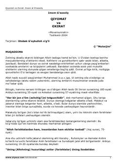

QVInson hayoti, o'lim va oxirat bosqichlari haqidagi diniy-ma'rifiy asar.
Ushbu kitobda insonning dunyodagi hayoti, o'lim va uning haqiqati, qabr hayoti hamda qiyomat kunidagi holatlar Qur'on oyatlari va sahih hadislar asosida bayon qilingan. Imom G'azzoliy qalamiga mansub bu asar o'quvchini oxiratga tayyorgarlik ko'rishga va yaxshi amallar qilishga undaydi.